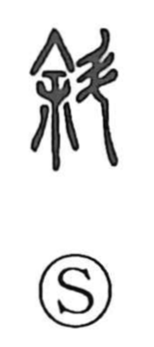

斜

Kun: naname | On: sha
slant ・ oblique ・ to incline
Explanation
A phono-semantic character, 斜 sets the phonetic 余 to indicate its sound—just as in 徐 and 除—and pairs it with 斗, the pictograph of a handled ladle. The Shuowen glosses it as “to ladle,” evoking the act of dipping and drawing water: one naturally holds the handle at an angle. From that characteristic posture arose the meanings “slanted” and “inclined.” Its sound is close to 邪 (ja/xié), and the two can at times substitute for each other, with 邪 occasionally carrying the sense of “slant.”